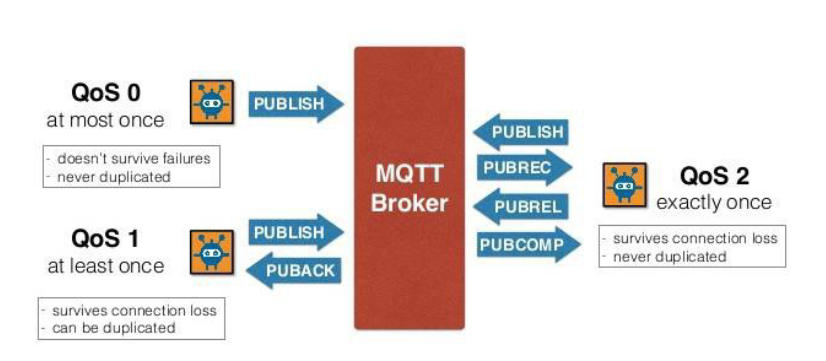

QoS
(QoS) level and whether the message is a publish or subscribe
request:
QoS level 0 (fire and forget): provides no delivery guarantees and has
the smallest overhead.
QoS level 1: provides at least one delivery guarantee.
QoS level 2: provides exactly one delivery guarantee.
